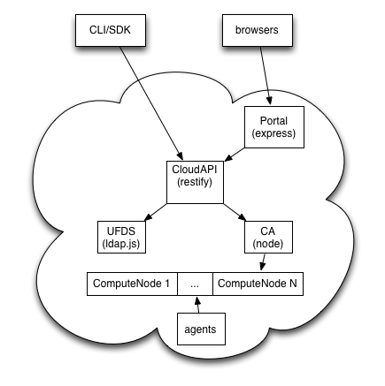

Node.js at Joyent
Looking under the hood
Mark Cavage
Seattle Node.js February 02, 2012
Who am I and why do you care about this talk?
Just a Distributed/Systems Programmer
I've had Various systems/network/application jobs at Nortel, IBM, Amazon (AWS); I now work for Joyent (and we just opened an office here in Seattle!).
Blah blah, that's largely irrelevant. What is relevant is that Joyent is using node a lot in a fairly non-standard way: we're shipping "shrink-wrapped" low-level systems software on it. This talk will be a quick walk-through of some highlights I thought notable.
About Joyent
-
SmartOS
Smartos is our own OS offering based on Illumos (fork of OpenSolaris). We build everything on this, as it gets us ZFS, DTrace and Zones.
-
Node.js
If you didn't already know, we're the key contributor to Node.js.
-
SmartDataCenter
SmartDataCenter is the software written for the Joyent Cloud available in your own datacenter. The rest of this talk is about that.
Overview of SmartDataCenter
SmartDataCenter is actually a slew of what would be standalone management products unified together. It's basically a turn-key offering that has provisioning, billing, monitoring, analytics, APIs, Portals, ...
Customer Portal
Our customer portal is written in express for content genation, and restify for client calls to CloudAPI.
CloudAPI
-
Public REST API
CloudAPI is our customer available REST API. Supports management of credentials, machines and analytics.
-
Transforming proxy
Written to not actually keep state, it proxies to all of our internal APIs and offers a unified interface.
-
Offers a Node.js SDK
Uses restify, http-signature, and ctype (to work with the SSH agent).
UFDS: LDAP from scratch
Highly scalable directory service. Leverages ldapjs and ldapjs-riak. Holds customers, credentials, config; basically a pile of shit you'd expect in a directory service.
Cloud Analytics: DTrace in the sky
Entire system is big, but leverages ctype, amqp, libGeoIP, libdtrace, and others.
DHCP Server in 511 lines of JS
-
Control server boots
We need to talk to our own internal systems to figure out IPs and build a pxegrub menu.
-
Uses node's dgram API
And some other internal libraries, but that's pretty much it!
A crapload of helper services
-
We have a slew of lightweight agents on every node
Things like heartbeating, provisioning, metering, monitoring, and metadata.
-
Lots of cross-hypervisor calls
zsock lets us open communiation channels in a tenant's virtualization containe. (SmartOS gets most of the credit here...)
-
Lots of ctype usage.
For example, translating VMDKs into something our hypervisor can use.
Stuff we couldn't live without
-
jsontool
Probably used more times per day than anything else.
-
dtrace-provider
Lets us get real-time analytics from JS
-
buffertools
Adds some nice helpers to the Buffers API
-
Isaac's page
Last but not least, Isaac's stuff, like tap, semver, lru-cache, ...
Questions?

/
#